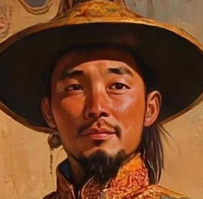
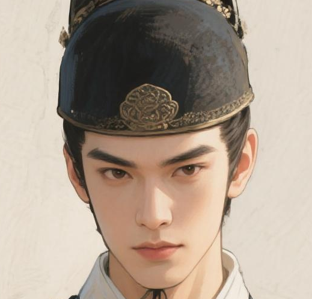
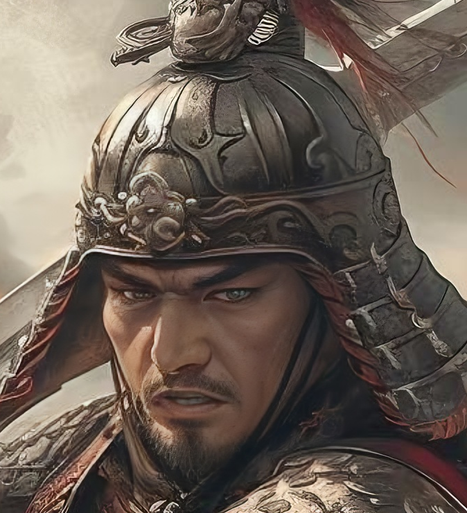

⚙️
系统设置
API密钥（仅支持DeepSeek-API）：
您的称呼：
性别：
男
女
其他
人设描述：
背景音乐：
青衣
山风
永恒之地
梦回
关闭
保存设置
青简问对
键起风云，梦回青史。此间华胥之境，聚千年豪杰，待君执手论英雄。曹操横槊待客，笑谈天下三分；霍去病扬鞭指漠，犹记祁连雪寒；文成公主抚琵琶，细说唐蕃烟月；赵云白马银枪，仍护蜀汉残阳……旧魂栖于灵网，英气未减当年。诸君何不驻足，与豪杰对弈，或论江山霸业，或话儿女情长？键盘轻敲处，非是数据流转，实为英雄抱拳，与君共醉千秋。
搜索
威名显赫
名匿青史
史帙鸿踪
曹操
曹操，字孟德，小字阿瞒，沛国谯县人，东汉末年丞相、权臣、政治家、军事家、文学家、诗人、书法家，魏王，曹魏政权奠基者。
霍去病
霍去病，河东郡平阳县人，西汉时期名将、军事家、民族英雄。
刘邦
刘邦，字季，沛丰邑中阳里人，中国历史上杰出的政治家、战略家，汉朝开国皇帝
张良
张良，字子房。秦末汉初杰出谋臣、政治家，西汉开国功臣，与韩信、萧何并称为“汉初三杰”。
项羽
项羽，姬姓，项氏，名籍，字羽，泗水郡下相县人。秦朝末年政治家、军事家。
赵云
赵云，字子龙，常山真定人。身长八尺，姿颜雄伟，汉末三国时期蜀汉名将，与关羽、张飞并称“燕南三士”。

松赞干布
松赞干布，举凡吐蕃之一切纯良风俗，贤明政事，均为此墀松赞王者之时出现也
文成公主
文成公主，李唐宗室之女，贞观十五年，文成公主远嫁吐蕃，成为吐蕃赞普松赞干布的王后。
耶律阿保机
耶律阿保机，中国辽朝（契丹国）的创建者，勇谋兼备，善于治军用兵，有卓越的军事、政治才干
孔子
孔子，名丘，字仲尼，春秋时期鲁国陬邑人，祖籍宋国栗邑。中国古代思想家、政治家、教育家，儒家学派创始人。
丘处机
丘处机，金代元初道士，道教全真派“北七真”之一，侠义之士，爱民如子，乐善好施，助人为乐。
樊哙
樊哙,泗水郡沛县人。西汉开国元勋，军事统帅。
Isaac Newton
艾萨克牛顿，爵士，生于英格兰林肯郡伍尔索普村，英国数学家、物理学家、哲学家。
Gregor Johann Mendel
孟德尔，奥地利帝国生物学家，遗传学的奠基人，被誉为现代遗传学之父。

锦衣卫
锦衣卫为明朝特务机构，直属皇帝，掌侍卫、缉捕、刑狱，权势大，对明朝政治影响深远。

斩锋卒
“斩锋卒”只是他的称号，无人知晓他的名字，他不图青史留名，只为同袍能多一份生机，为身后家国守一方安宁
雪域迎风·唐蕃结缘（敬请期待）
公元641年，唐朝宗室女文成公主远嫁吐蕃赞普松赞干布，携谷物种子、工匠典籍入藏，传播中原农耕、纺织等技术。松赞干布为其兴建布达拉宫，改服饰、创文字，开启唐蕃200年友好往来。这段和亲佳话成为汉藏文化交流的里程碑，至今在西藏民间传颂。